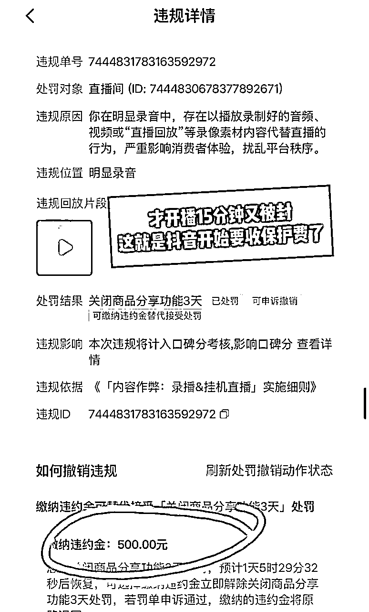
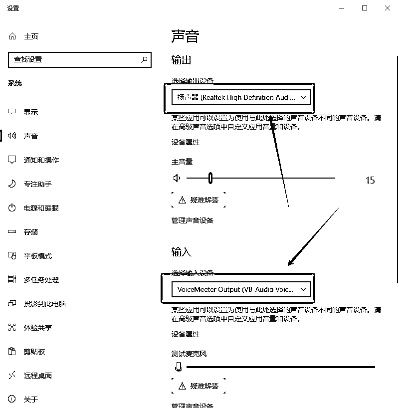
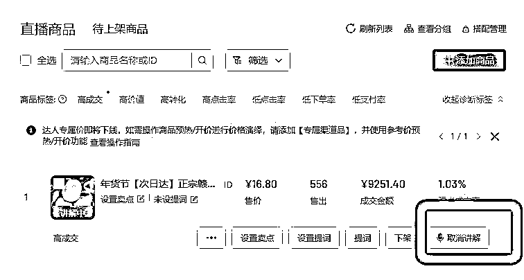

来源：https://whr4n9m7ex.feishu.cn/docx/J0LMdUHs9oEXQQxoprpc8eNUn1f
大家好，我是viki，在今天辞旧迎新的日子里，这是我第一次在生财有术发帖，带着忐忑和期待，希望我的实操经验能给你的迷茫带来一些信心，也是我的一次成长在生财有术的大家庭的记录。
先直接爆一下我的成绩：
11月13-12月20日，总佣金10000+。
我从11月13号开始做的，37天之后，5个号。
一个号单场破了GMV100000，总gmv大约16万，但是被我骚操作搞封了30天；
一个号两场直播gmv90000+；
一个号GMV30000+,一个号GMV10000+，一个号GMV几千(现在都在回想小额的数据可能会有稍微的偏差）这是我的第一个阶段，和公司合作阶段的成绩。
12月28-至今 我终于靠自己站起来了，40天赚了8000元
我会从以下6个方面分享，赶时间的朋友可以之前去看“3”：
做任何项目，最难的就是一个信任问题，有很多人说要跟我学（因为我是一个特别爱在朋友圈分享的人），但只要聊到需要投资系统，大家就会犹豫，这个我能理解，就包括我自己也是这样的。
我加入生财有术好几年了，里面赚钱的项目多到我看不完，有段时间焦虑到我从不看生财，因为我很难去相信互联网上的人，我情愿去思考打工，赚点牛马费，也很难去相信网友能让我实现躺赚，年入百万这种，这可能也是我这么多年作为资深知识付费的韭菜后遗症吧。
首先，我跟着这家公司的老板拿到过结果，已经让我实现了从农村逆袭成在厦门市中心有房一族；
其次，接触多年之后，我和这个公司的老板关系还不错，新项目的投资信任问题不存在；
最后，还是我的防备心很重，很难去信任一个陌生人/一个陌生的团队，6年只有职业生涯过去，我加入生财也好几年了（中间断了一次续费），一直都没有找到其他更加信任的团队/个人，也就是说这个团队是目前我能做的最好的选择。
所以，我选择了它，还有一个原因，就是因为它就在我的身边，我现在已经常驻在公司里办公了，虽然我不是这家公司的一员，但我每天都知道他们做了什么，项目遇到了什么问题，消息相比较其他的合作客户，我的消息是第一手的。
做项目最怕的就是信息的延迟，这是我个人的观点欢迎交流。
选择它，我不怕，我像当初选择跟着他们做淘客一样，再次选择了all in ，有同存亡的决心的，当然我们是不会亡的。
前面有提到，我和这家公司的老板比较熟，时不时的会吃个饭、聊聊天，虽然从17年我们共同合作过一个项目至2021年后，我们就没有那么紧密的合作了，但我也知道他们一直从抖音图文-抖音无人直播-抖音半无人直播-抖音真人电商直播-抖音ai半无人电商直播-抖音ai小时达-未来……
他们一直是专注在抖音平台专研，现在这个ai系统是他们自主研发的，再加上他们多年积攒的丰富的运营和选品经验，在我心里已经无敌了。
这一路走来我也是断断续续的跟着，也再次赚到过一些小钱，比如做图文我就做到了一个10万粉和2个万粉的账号，抖音直播带货也赚到钱了，去年年底做ai半无人电商直播，我一下子干到了万人在线，三场直播也赚了4、5000元。
其实这怪我自己，我一直是一个很任性的人，总是间歇性的踌躇满志，习惯性的坐吃等死，包括这次ai小时达的红利也是，之前我在公司已经办公1个月了，前一晚老板们还在讨论小时达这个项目可以做，我就坐对面听着，第二天我由于没电脑，在为自己年后卖电脑的行为内耗直接摆烂，拒绝一切消息摄入。
可是第二天只要起号，每个号都可以播大几万gmv一天。10%的佣金的话，一天赚个几千块很轻松，多个号操作，那日入过万也不是事。21天的时间，那我就可以赚好几万了，只是人生没有早知道。
突然摆烂的某天，意识到自己不能继续内耗下去了，继续下去自己手上已经打好的牌会被我继续打烂的，那时候我很喜欢这句话，“如果辉煌留不住，那就从头来过。”
距离项目开启过去之后的第21天，我又重新来公司工作了，这个时候平台比一开始就严格了一些，号没那么好稳，但也还行，后面我起5个号，5个都起来了，只是数据没那么漂亮。
所以，决策成本很高，如果我当时不那么任性，坚持一下，这次赚个几万问题不大。
跑第一号的时候，单场gmv卖了几千元，数据并没有特别的好，同时我自己也在做自营账户，当时我的精力全部都在准备新账号上面。
但我跑这个项目的第16天之后，也是我被封了2个号，一个自营一个合作账号，重新注册的一个新的抖音号，我就大爆了，单场破了10万的gmv，总共跑了15万的GMV。
合作第1个号，后来换品，爆了，两场GMV93190元，分成后佣金3635元，后面又播了
合作第2个号，至今为此卖了15.54万，分成后佣金4735.77元，实际上这个号是赚了9500元左右。后来大概率是因为我的骚操作，有团长问我要联系方式，我回复私信了，然后被封了30天，12月15号才能出来。
合作第3个号，播的是一个小众的品类，每天有个1-200的佣金（这个号由于是凌晨开播，又是合作方提供的账号，她不太配合，就播了几场就终止合作了）
合作第4个号，也小爆卖了30000+，佣金分成后，我可以拿到600元。
合作第5个号，卖的大米，忘记卖了多少钱了，应该也有几千元GMV，后来是因为供应链联系不到，运营也精力在这个号上面，至今这个号没有被重启过。这也是我想要自己做号的原因。
后来又播了几场，总共的佣金有10000+。
我总是想低成本的思路赚钱，其实这样最影响赚钱的速度，所以一开始，第一个号，我是用云服务器播的，第一场也卖了几千，第二个号我自己运营，但我做的素材不抗打，播第三场就被封禁了，也没有什么特别的成绩。
我当时的想法是，我天天在朋友公司办公，合作号也可以赚钱，我自己手上在当时不仅在私域卖赣南脐橙，还早上写作，刚开始工作的状态，我还基本每天需要花2个小时去运动，来维持自己的良好心态，当我晚上回到家的时候，我是没有什么意愿想要去赚钱的，所以，晚上我基本上都是回家了就是看会书、玩会手机、或者卖一下橙子，我早早就去睡觉了，那我的自营号也分配不到多少时间去运营，就只能靠合作号赚钱了，我就负责配合运营的工作，比如提供新的账号，开播、商品、下播等等。
合作号，是和公司5:5利润分成的，而且运营手上有很多个合作客户，那我就必须排队等着他的安排，除非我给他一个新的抖音号，他的积极性才会马上被调动起来，因为新号代表这个账号干净，那只要当时有出爆品或者有些品搞促销之类的，搭配合适的素材，爆的机率非常大，所以我给的5个号，5个都起号成功，并且有大爆的场次。
当时我搞新号也不是很顺利，当我有了第3个抖音号的时候，我是很想自己运营账号的，但我不太自信，我问了我这家公司老板朋友，他说“搞素材，去重看起来很简单，但他们都是老运营了，无意识的动作都是靠经验积累出来的。”
也问了另一个同行，他三台电脑，多个号都是搞合作号，赚的还不错，他说可以涨经验。
经过多方考量，外加我的不自信，后来我又合作了2个号。
我记得当时刚刚从游泳池出来，他发信息给我，你盯着一点你的号，现在都百人在线了，就在我来公司的路上十几分钟，在线人数马上破千了，当晚gmv就破10万了。
只要大爆就会有黑粉，我好久都没有这样的经历了，也是怪紧张和害怕的，很怕被别人投诉和出违规，我一个人在公司一直盯着直播间，盯到晚上的22点的时候，果然出现了第一次滑块验证，被我及时发现也算渡过了一次考验，后来没半个小时再次出现了，而且这次验证更加的难，类似阅读理解题，当时我又紧张还害怕，最后也不知道是答错题了还是超时了，第一次被下播了。
其实这时候应该要积极的上防人体检测的黑科技的，可是运气也不是特别好，原来用的商家进去了，联系到了另一家，但是运营又在忙，我自己又连关闭360杀毒软件都不会，我也以为我人在，不会有什么问题，掉以轻心了。就这样第一次封禁直播权限出现了。
但我没经验，我以为封了就不可以播了，就直接回家了，在回家的路上，看群消息，朋友说可以继续开播，只是封了10分钟，就又返回公司马上开播，这时候流量还是在的，一开播马上上人，又上了活体检测通知黑科技，我也盯到了凌晨两点，就回家睡觉去了。
我早上6点起来就去公司了，但发现它被限流了，然后重开，重开之后没多久就被卡黑屏了，不知道这是远程网络卡的问题还是出现了电脑卡机问题?我就又从公司回家去重新开机（直播电脑放在家里，我在公司用远程的方式操作），重新开播，一晚上没睡好，又跑来跑去的，感觉还怪折腾人的。
几个小时之后又再次出现违规，这是直接被关闭橱窗功能3天，3天后又被追封了3天，这个期间违规越来越严了，但也有很多新号都起来了，赚的还不错。
这中间又出来一个促销品，20%的佣金，但我当时没新号开播，朋友一天赚了1000多。
等到我的大号6号被解封出来，就短短的几天，平台政策就发生了很大的变动了，刚开播15分钟，流量也有了，但是又被封了，封禁就特别的严，现在需要缴纳500元的保证金，才可以重新开播。前一天被封了不少的号，现在也不知道到底是什么风向了，那我就选择了随其自然吧，也没有去缴纳罚款。

从跟下来5个号之后，以及观察其他同行的情况，我的个人感受：品大于新账号大于AI工具大于运营（找素材、去重）
1、品很重要，如果爆品一出来就去跟，起号成功的概率非常的大
2、账号，一个新账号去播一个爆品那就是王炸，第一场就会有不错的数据。
3、ai工具，它只是赋能，如果这个工具用起来很简单，那对小白就很友好，今年年初我用了一家的ai软件就 很不好用，使用起来很复杂，但现在我用的就很简单，就是把话术填充进去就行了。然后它回答公屏也很智能，比我们自己当主播遇到尴尬的问题，不好回答，它还能高情商的回复，这就让人很省心。
4、运营：运营就是要去找对标账号，录素材，去重。
对标，就是你知道什么品爆了，那你就去直播广场用关键词，比如我卖的赣南脐橙，就用“赣南脐橙”去搜索，或者用“小时达赣南脐橙”，你搜到了千人在线的，那你就用“小雨点”这个录屏工具，去录个10-20分钟下来。
录下来之后，你就用剪映去去重，去重手法去抖音搜索，我也是自学的，一边看视频一边实操，就用了三步，一加了滤镜，二加了黑布和闪白特效，三加雪花滤镜，
所以，我的经验告诉我，决策成本很大，每一个决策的时候都会有各种不同的结果，在我跟了5个账号之后，我也学会了ai系统的操作，经历了流量的变化，知道会遇见什么违规情况，应该如何应对，这时候又感受到了依赖别人做事被牵制的不痛快，经过一周的考量，那我觉得还是得靠自己，并且我特别想要锻炼自己独自操盘的能力，那说干就干吧。
说干就干，在12月28日，我开始了独自运营第一个号，第一场直播就卖了10000+，这瞬间给了我信心，佣金10%，退款率在10%以内，当时播了2个号，小号基本就覆盖退款率，一天就赚了1000多，别提当时感觉多爽，第二场没卖多久提示违规警告，当时我就马上下播，还没有来得及去过真人，我的第二个新号出了紧急情况。这两天我所有的心思都在新账号和其他的事情上，我都忘记了这个账号的情况，还没来得及去顾上它。
第二天我就马上就又起一个新号，第二天就卖了17000+，预估佣金1700元。但这是别人提供账号和电脑的合作号，期间很多行为我不能完成掌控。
第1天开播，晚上9点开播，卖了4个小时151，判断是开播时间太晚，晚上9点流量被所有的大号碾压，看流量不行，凌晨一点我就下播了。
第二天从早上7点拉到了下午3点，才卖195，我也下播了。晚上八点半我换了一家新链接开播，卖了4个小时，就卖了17491，谈了一个违规警告，然后一直要求我马上下播，我不明白情况，我 肯定不会听他的意见，让安装滑块，说对他电脑安全需要放开他不放心，没有安装成功。
第3天晚上七点半开播，过真人开播，卖了2869元，我特意叮嘱了拉过夜，又没有听我的运营方法，半夜下播了。
第五天，我早上6:20，特意早起开播，开播15分，卖了47元，直播伴侣卡了，想重来开播，发现被锁了直播伴侣，我很生气，这有什么好上锁的，那这样的合作又有什么意义。
八点我又重新开播，4986，出了10分钟滑块，让换老版本直播伴侣又是电脑安全问题，没装，重开卖了212，卖了3小时看没流量，他又自己主动下播。
这时候我很生气了，不想合作，电脑不太适合，然后他的行为已经完全干扰我的运营了，开播下播这么多次，想要继续拉时间成本太高了，我还不如去做新号，因为我自己还有新的账号都没有精力去运营。
昨天我就又剪辑了一个视频，重启了一个旧号，目前已经拉了38个小时，卖了32819元。
我已经彻底放弃他的这个号了，即使他要求保持合作我也不愿意了，不过我系统还在空的情况下，也借给他用了，目前拉了一个夜，也就只卖了632元，需要花精力去思考想想问题如何解决，但我已经打算放弃了。
他的一些无意识的行为在我看来就会给账号掉出流量层增大概率，这本身就是一个赛马的游戏，不仅不助力还给阻力，那这怎么运营下去。
我的经验总结：人要先鲁莽开局，然后在做的过程中去积累信心，再慢慢的把实力提上去。
当时我还不是特别的自信，因为这需要投入电脑，我有过一次前车之鉴，就是去年年底，我买了一整套设备，也才赚了几千，后来由于搬家的原因，我直接把设备贱卖了，也就是这么搞一圈下来，其实那次本来我至少赚到了设备和软件钱，最后我还倒亏时间成本。就这件事情在我心里一直有阴影，我很怕这次投入进去又和上次一样。
我也是纠结了好几天，到底要不要买电脑，一开始他们也不建议我买电脑，也很怕我和之前一样，就建议我先用云服务器(云电脑，但执行的运营是很嫌弃云服务器的，其实它不仅一个月的费用也需要小几百元，还容易封号)或者租电脑，第一天我就把云服务器租好了，ai系统也搭建好了，准备开播的时候，发现我租的这个云服务器不行，最后是这家公司老板把自己的云服务器借给我，好像第一场有卖个几千的gmv，也给我带来了一些信心，但是运营一直在嫌弃，这时候我也在考虑是不是要租电脑。
11月13号的时候，我在京东下单了，但是我一核算，租一台一个月也需要400多元，我有点顾虑，会不会坏，会不会被讹买下电脑，归还需要自己打包电脑，项目也不知道用电脑几个月，中间某月不用我是需要马上归还吗?那如果又要电脑，我又会不会因为电脑没准备好错过机会，因为做这种项目，时间就是金钱，错过了就是错过。
内心戏太多了，最后纠结几个小时之后，如果电脑租一年也就可以买下这台电脑了，也为了表达自己做这件事的决心，不让自己有后退可言，我马上退了租约，直接买电脑。
买电脑是因为我有一个私心，我原来的一个会员钱可以兑换了一套ai系统，再加上我很想自己锻炼一下自己的软实力(运营能力)，而且所赚的利润也全部归我自己，在这我看来我就是为自己打工不是为别人。
但我自己一开始压根就没怎么花心思在运营上面，所以结果并不怎样，第一场直播才卖200多的gmv就被封了第一个号。
云服务器，运营又很嫌弃，说容易封号，在被封第一号的时候，我觉得应该尽量降低客观会影响直播间的因素，当时看别人3台电脑，每天播的很不错，那如果我也能再添加一台设备，能爆的概率也大一些，我很清楚记得这是一个周天加班的上午，这个决定下的非常快，也就几十分钟的事情，马上又买了第二台电脑。
我平时用电脑的频率很低，就只会粘贴、复制这种水平，其他的我都不会，算是电脑白痴，而且我不是一个有耐心的人，经常因为有小卡点自己解决不了，然后造成了整件事情无法进行下去，所以我特别喜欢赚钱，因为有钱我就可以找别人帮我解决。
但有些事情又很着急，有钱也不一定能找到人帮我解决，所以在我买第一台电脑的时候，我是选择放在我朋友的公司的，这样我有任何问题都有专业的人帮我解答，我就不会因为有卡点而无法把项目推进。
然而他们公司的网络太多了，IP早就被锁定了，封号都是连封，这是我一开始没有考虑到的，我原以为只要我重新去牵一条网络就可以了，我当时还在因为牵哪一个运营商而苦恼，因为我真的是一个只会出钱，什么都不懂的人，去到营业厅只咨询套餐价格以及是否能快速的安装，当然我和朋友确认好了上行速度有30m就可以。
最后我选择了一个离我家办理业务比较方便的移动，而且套餐费用比电信便宜一半，事后才得知，电信其实才是专业做公司宽带的，移动式主要做家庭宽带。
等我电脑到了公司，都已经安装上了，然后一个运营就一直和我说:”不懂我为什么要把电脑放在公司，是要和公司共存亡吗?“，说太多次了，我也就把他的话听进去了，当天晚上就又打了个车，叫同事帮忙，把电脑移回家去了。当时一个同事不愿意又换了一个人，这真的好尴尬啊。
我是一个连有线网线，既然只是买一根网线，把线的一头接在路由器，另一头接在主机后面就可以上网的常识都没有的人，是后来我打电话问安装的师傅才清楚。
第二台电脑到家，我自己已经安装好了，但就是网线怎么插也插不进去，当时又着急想去游泳，差点急的，脾气上来了，最后还是发视频给安装的师傅，他说:“网线插反了。”我真的对我自己太无语了。
这个过程我写出来，可能你们感受不到什么难度，但确实折腾我好几次了，当时有两次都差点搞崩溃，很想砸电脑，很想发脾气。特别有一次我拿着网线到处找人接水晶头，找了4个店家都没人会接，最后还是我自己去找安装网线的人花钱才解决掉这个小问题的。
电脑配置：
感谢大家的阅读，看到了这里，我啰嗦太多了，以上就是我内耗和我由于遇见了这个机遇，重新开启了我的新生活，连锁反应，一切都好起来了，公众号的流量主起来了，写付费内容有人看了，生活也变得充实而踏实了，再也不会由于36岁时一个中年未婚女性焦虑了，因为我有一个一天日入3600+的项目在手，我每天都有了期盼了。
那接下来我会和大家分享，我是如何一步一步实操这个项目的，一张图一个步骤的写出来，希望对你们有用。
实际上前天收入突破4000+了，那我就从0开始写做这件事到底是如何操作了。
第一步：准备好账号和ai软件，下载好直播用的软件
第二步：配置电脑
第三步：配置AI语音
第四步：选品，录制素材、话术
第五步：正式开播
第六步：检查直播间
第七步：小白快问快答
准备好账号、注册好ai软件、下载好直播用的软件
刷好1000粉丝，（没有刷分渠道的，可以问圈友）开通好橱窗，商品橱窗里面交好作者保证金50元（不做随时可退）。
下载网址：https://streamingtool.douyin.com
建议用老版本的：找我要安装包 ，其实我也需要去找一下，我真的是一个电脑白痴。
登录网址：（www.douyinec.com）
登入我们公司的AI运营台（http://douyin.toloho.ltd/index/index/login.html）注册软件或者你的软件
下载地址：https://sunlogin.oray.com/download?categ=personal&sys=windows&ici=sunlogin_navigation）
登入好我们的运营台，进行账号授权--添加抖音号--扫码授权--返回运营台刷新界面，就可以看到你的账号信息，在点击灰色的巨量百应授权，再次进行扫码，完成授权。
虚拟麦克风下载链接: https://pan.baidu.com/s/1oZuPIJspoEFLE9PWUFlc8w?pwd=1234 提取码: 1234

2、1.打开直播伴侣--选择竖屏
2、2.打开设置
2、3.点击音频--麦克风，默认设备下面有个VB这个选项，选择它。
注意⚠️：扬声器选择扬声器或者你的音箱设备，都行，不能选择VB。（到这里直播伴侣设置完成）
恭喜你，已经看到这里了，你太厉害了，离了解开直播赚钱的路又近了一小步。
3、1.鼠标右击你的小喇叭
3、2.打开声音设置
3、3.进入到以下页面
输入--选择VB
输出--选择扬声器或者音箱设备。

3、4.网页端，打开抖音随便进入一个直播间，声音打开，网页不要关闭，鼠标往下拉点击高级声音选项。
3、5.然后鼠标往下滑，应用音量区域，浏览器输出选择VB。返回到直播伴侣。
3、6.返回到直播伴侣进行确认。麦克风是否在动，动了那就说明设置成功了。
真的太棒了，你已经完成了电脑设置了，这对我来说真的头都是大的，因为个别电脑不一样，设置会不一样，我会有畏难情绪。
3、1. 打开我们的运营台--点击AI替你播

3、2.进入到我们AI界面--如果话术准备好了，直接填写进去，自动保存。
3、3.接下来，我们要克隆AI的声音，点击克隆声音，然后打开网页去抖音直播间找自己觉得合适的真人直播间，无噪音的声音去克隆。
3、4.选择直播间采样
3、5.注意，粘贴正在直播的抖音主页
3、6.找到合适的直播间，点击该主播的头像，到他主页，复制以下链接，拿到一步的位置进行克隆。
3、7.给声音命名--点击上传。这样就算克隆成功了。
3、8.返回AI界面，这个就是你刚才克隆的AI的声音，开播的时候选择它。
到此，ai语音配置也已经完成啦～真的太棒了。
选品，我们公司有供应链，并且我们只打爆品。
比如：打赣南脐橙，那你就开始去抖音直播广场去搜索对标账号
那就用“赣南脐橙”或者“赣南脐橙小时达”这两个关键词去搜索直播间，只要你刷到了真人在线大几百上千人的，那就是你要的对标直播间。
刷这个很快的，我们打的品一定是爆品，所以你刷个十几分种就可以刷到，因为我第一天开始自己做的时候，就是在听到对面的老板朋友说“赣南脐橙，别人5分钟卖5000元，我就马上去搜索，一搜竟然被我搜到了公司的号，然后马上点上”关注“，其实只要有几百人在线的就都不错，可以开始录素材了。
用小绿点录素材/话术
4、2、1、先下载小绿点
这是当时公司运营帮我下载好的，你自己去百度一下。
4、2、2、录素材
下载好了之后，把对标直播间的首页网址复制到添加主播那栏，点击检测录制。
我一般录制15分钟左右。
话术也可以自己录，我还没有自己录过，笨方法就是把你刚刚录制的素材，一点点的暂停，把你在里面听到的话，一点点的写下来，这就是爆款话术。
我还没有自己录制过，全用的公司给的模版
用剪映去对刚刚录制好的素材去重，我当时自己不敢做号，我的卡点卡在这里，我对电脑的使用程度很不熟练，我除了会打字之外什么都不会，而且我性子又急，遇到一点问题解决不了，就想要砸电脑的这种，所以我能靠别人帮我赚钱的，我就不想自己动手，后来是因为我实在和这个运营性格不合，我忍不了一点，还有一个就是我想要自己在这个项目中学会一点真正的软技能，比如剪映电脑版本的剪辑，会了这个以后出去找工作也好做，这是一门技能 ，我就再也不要考虑去做收银员了。
所以，我就自己干，我也是去抖音去搜索，剪映去重手法，就随便挑了一个自己顺手的
1.76 复制打开抖音，看看【小小小拇指的作品】# 视频除重技巧 # 短视频制作教程 # 剪辑教程... https://v.douyin.com/CeiJX5uQC/ MWZ:/ y@t.re 05/27 ，
每天剪辑素材的时候跟着操作一遍，慢慢的就变得的新顺手，现在不需要对着手机，一步步暂停，我也可以去重来。
登录ai系统，添加抖音号，打开ai替你播，填充话术

5、2、 1.打开巨量百应后台--点击前往直播设置
5、2、2.选择直播间设置--直播间小时达专场--点击开启
5、2、3.选择单店铺专场，填写店铺的ID,选择商家点击确认就可以了。

5、2、4.返回中控添加商品链接--把给你的商品链接复制进去--点击确认就添加上了。
5、3、1.回到直播伴侣，添加你做好的背景视频素材，背景图片文案。
5、3、2.最终效果是这样
5、3、3.根据你的内容修改标题，直播内容分类--其他--生活
5、3、4.正式开播之前，先回到AI界面，启动AI主播，需要初始化，要等一下。出现字幕就启动成功了。
5、3、5，回到直播伴侣点击“开始直播”
5、3、6、回到巨量百应，在添加商品的位置，点击讲解

去直播间听一下声音是否正常，如果没有噪音，那就完事了，预祝直播旗开得胜！
这次自我突破，让原本一个6年自由职业都没有找到第二曲线，并且严重内耗的单身中年女人，总算重拾了生活的信心，让我由原来一个“找不到生活的意义的人”，现在每天都和打了鸡血一样的在工作。
感谢大家看完了，希望我的故事，或许能为你们提供一些实用的建议和鼓励！
我也没有读多少书，只会记流水账，也不会用什么经典的语录结束，但这次再次感谢圈友品红在剪辑时刻给的协助，虽然听起来很小的帮，但帮我解决了很大的一个心里卡点，也感谢这段时间和同事的合作，里面的图片有部分是同事原教学文档里面的，还有我朋友在我运营账号上的引导，感谢鱼丸的协助，大家才能看到这篇文章，谢谢所有人！
再感谢自己的这一次的突破，也用了2天的时间，完成了完整的复盘，在生财有术星球上，每一步的成长都值得被记录，每一次的尝试都值得被鼓励。
最后再祝大家新年快乐！2025年生财有术！